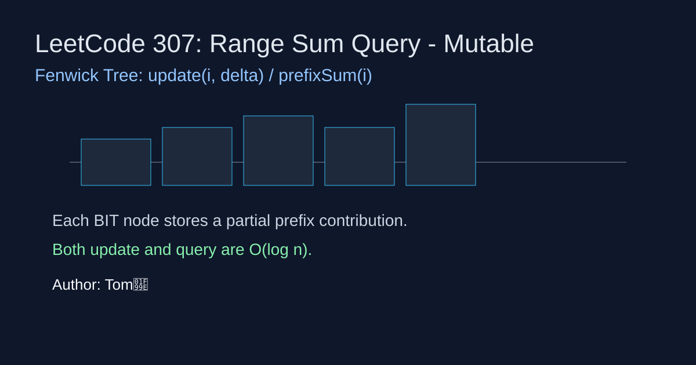

LeetCode 307: Range Sum Query - Mutable (Fenwick Tree)
LeetCode 307Fenwick TreePrefix SumToday we solve LeetCode 307 - Range Sum Query - Mutable.
Source: https://leetcode.com/problems/range-sum-query-mutable/

English
Problem Summary
Design a data structure that supports updating an element and querying range sum repeatedly.
Key Insight
Use a Fenwick Tree (Binary Indexed Tree) to store prefix contributions. Both point update and prefix sum query become O(log n).
Algorithm
Store original values in nums. On update, compute delta = val - nums[i], then add delta through Fenwick indices. Range sum is prefix(right+1)-prefix(left).
Complexity
Update: O(log n), SumRange: O(log n), Space: O(n).
Reference Implementations (Java / Go / C++ / Python / JavaScript)
class NumArray {
private final int[] bit;
private final int[] nums;
private final int n;
public NumArray(int[] nums) {
this.n = nums.length;
this.nums = nums.clone();
this.bit = new int[n + 1];
for (int i = 0; i < n; i++) add(i + 1, nums[i]);
}
private void add(int i, int delta){ for(; i <= n; i += i & -i) bit[i] += delta; }
private int prefix(int i){ int s=0; for(; i>0; i -= i & -i) s += bit[i]; return s; }
public void update(int index, int val){ int d = val - nums[index]; nums[index] = val; add(index + 1, d); }
public int sumRange(int left, int right){ return prefix(right + 1) - prefix(left); }
}type NumArray struct { bit, nums []int; n int }
func Constructor(nums []int) NumArray {
na := NumArray{bit: make([]int, len(nums)+1), nums: append([]int{}, nums...), n: len(nums)}
for i,v := range nums { na.add(i+1, v) }
return na
}
func (na *NumArray) add(i, d int){ for i <= na.n { na.bit[i] += d; i += i & -i } }
func (na *NumArray) prefix(i int) int { s:=0; for i>0 { s += na.bit[i]; i -= i & -i }; return s }
func (na *NumArray) Update(index int, val int) { d := val - na.nums[index]; na.nums[index]=val; na.add(index+1,d) }
func (na *NumArray) SumRange(left int, right int) int { return na.prefix(right+1)-na.prefix(left) }class NumArray {
vector bit, nums; int n;
void add(int i,int d){ for(; i<=n; i+=i&-i) bit[i]+=d; }
int prefix(int i){ int s=0; for(; i>0; i-=i&-i) s+=bit[i]; return s; }
public:
NumArray(vector& a): bit(a.size()+1), nums(a), n((int)a.size()) { for(int i=0;i class NumArray:
def __init__(self, nums):
self.n = len(nums)
self.nums = nums[:]
self.bit = [0] * (self.n + 1)
for i, v in enumerate(nums, 1):
self._add(i, v)
def _add(self, i, d):
while i <= self.n:
self.bit[i] += d
i += i & -i
def _prefix(self, i):
s = 0
while i > 0:
s += self.bit[i]
i -= i & -i
return s
def update(self, index, val):
d = val - self.nums[index]
self.nums[index] = val
self._add(index + 1, d)
def sumRange(self, left, right):
return self._prefix(right + 1) - self._prefix(left)var NumArray = function(nums) {
this.n = nums.length; this.nums = nums.slice(); this.bit = new Array(this.n + 1).fill(0);
for (let i = 0; i < this.n; i++) this._add(i + 1, nums[i]);
};
NumArray.prototype._add = function(i, d){ while (i <= this.n) { this.bit[i] += d; i += i & -i; } };
NumArray.prototype._prefix = function(i){ let s = 0; while (i > 0) { s += this.bit[i]; i -= i & -i; } return s; };
NumArray.prototype.update = function(index, val){ const d = val - this.nums[index]; this.nums[index] = val; this._add(index + 1, d); };
NumArray.prototype.sumRange = function(left, right){ return this._prefix(right + 1) - this._prefix(left); };中文
题目概述
实现一个结构，支持数组单点修改和区间求和的高频查询。
核心思路
使用树状数组（Fenwick Tree）维护前缀贡献。单点更新和前缀和查询都能在 O(log n) 完成。
算法步骤
维护原数组 nums。更新时先算差值 delta，再把差值沿树状数组向上累加。区间和通过两个前缀和相减得到。
复杂度分析
更新 O(log n)，查询 O(log n)，空间 O(n)。
多语言参考实现（Java / Go / C++ / Python / JavaScript）
class NumArray {
private final int[] bit;
private final int[] nums;
private final int n;
public NumArray(int[] nums) {
this.n = nums.length;
this.nums = nums.clone();
this.bit = new int[n + 1];
for (int i = 0; i < n; i++) add(i + 1, nums[i]);
}
private void add(int i, int delta){ for(; i <= n; i += i & -i) bit[i] += delta; }
private int prefix(int i){ int s=0; for(; i>0; i -= i & -i) s += bit[i]; return s; }
public void update(int index, int val){ int d = val - nums[index]; nums[index] = val; add(index + 1, d); }
public int sumRange(int left, int right){ return prefix(right + 1) - prefix(left); }
}type NumArray struct { bit, nums []int; n int }
func Constructor(nums []int) NumArray {
na := NumArray{bit: make([]int, len(nums)+1), nums: append([]int{}, nums...), n: len(nums)}
for i,v := range nums { na.add(i+1, v) }
return na
}
func (na *NumArray) add(i, d int){ for i <= na.n { na.bit[i] += d; i += i & -i } }
func (na *NumArray) prefix(i int) int { s:=0; for i>0 { s += na.bit[i]; i -= i & -i }; return s }
func (na *NumArray) Update(index int, val int) { d := val - na.nums[index]; na.nums[index]=val; na.add(index+1,d) }
func (na *NumArray) SumRange(left int, right int) int { return na.prefix(right+1)-na.prefix(left) }class NumArray {
vector bit, nums; int n;
void add(int i,int d){ for(; i<=n; i+=i&-i) bit[i]+=d; }
int prefix(int i){ int s=0; for(; i>0; i-=i&-i) s+=bit[i]; return s; }
public:
NumArray(vector& a): bit(a.size()+1), nums(a), n((int)a.size()) { for(int i=0;i class NumArray:
def __init__(self, nums):
self.n = len(nums)
self.nums = nums[:]
self.bit = [0] * (self.n + 1)
for i, v in enumerate(nums, 1):
self._add(i, v)
def _add(self, i, d):
while i <= self.n:
self.bit[i] += d
i += i & -i
def _prefix(self, i):
s = 0
while i > 0:
s += self.bit[i]
i -= i & -i
return s
def update(self, index, val):
d = val - self.nums[index]
self.nums[index] = val
self._add(index + 1, d)
def sumRange(self, left, right):
return self._prefix(right + 1) - self._prefix(left)var NumArray = function(nums) {
this.n = nums.length; this.nums = nums.slice(); this.bit = new Array(this.n + 1).fill(0);
for (let i = 0; i < this.n; i++) this._add(i + 1, nums[i]);
};
NumArray.prototype._add = function(i, d){ while (i <= this.n) { this.bit[i] += d; i += i & -i; } };
NumArray.prototype._prefix = function(i){ let s = 0; while (i > 0) { s += this.bit[i]; i -= i & -i; } return s; };
NumArray.prototype.update = function(index, val){ const d = val - this.nums[index]; this.nums[index] = val; this._add(index + 1, d); };
NumArray.prototype.sumRange = function(left, right){ return this._prefix(right + 1) - this._prefix(left); };
Comments